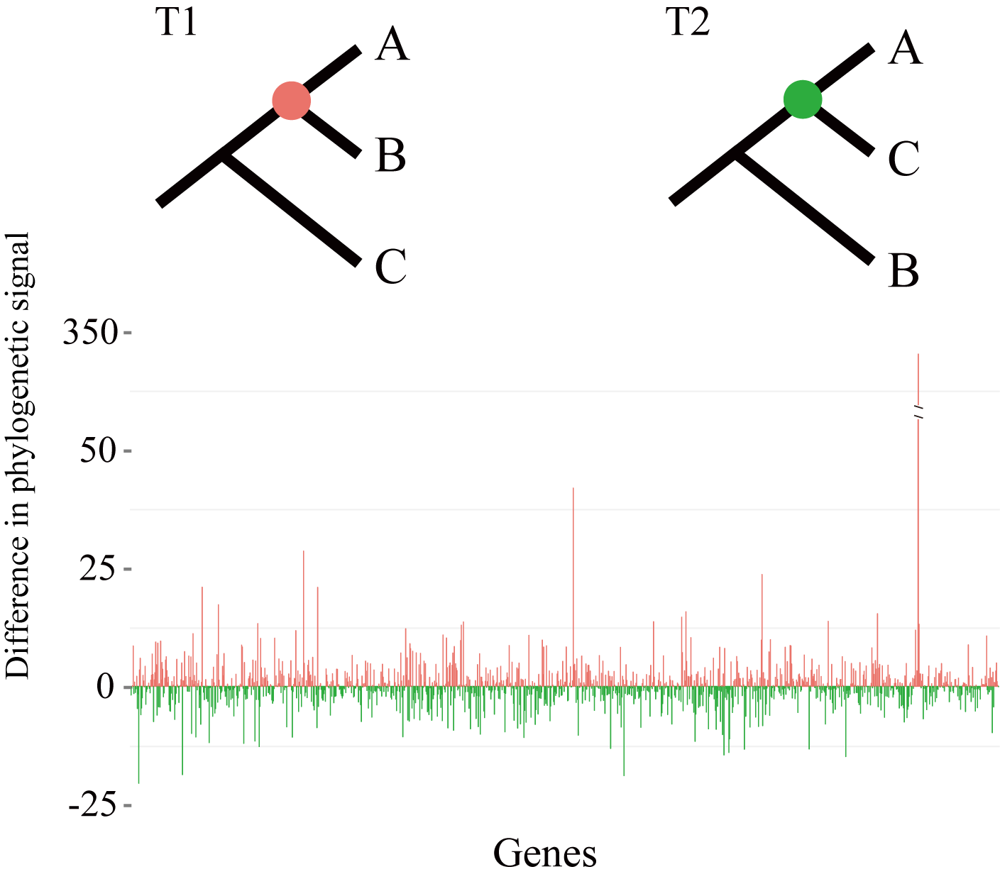
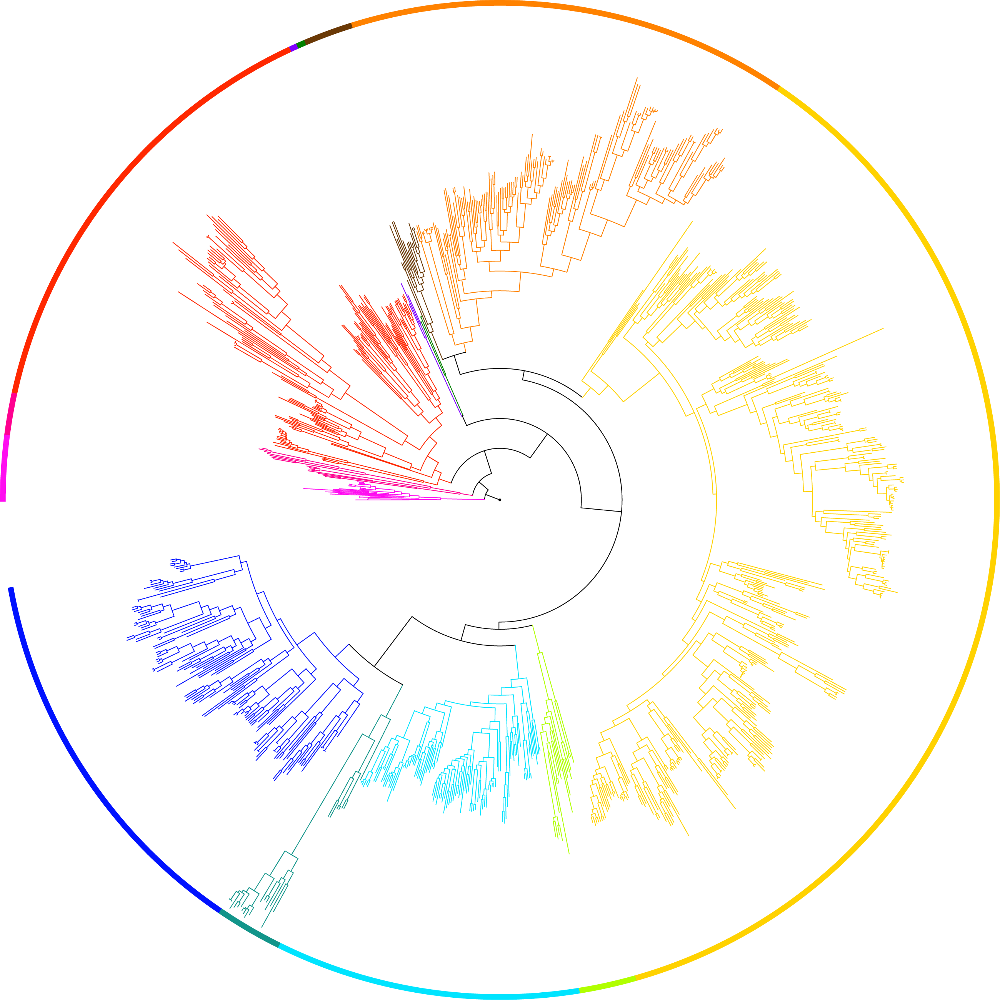

1. Dissecting factors that contribute to the phylogenetic uncertainties

Phylogenetic trees are essential for understanding how genes, genomes, organisms, and species evolve, yet their reliability and robustness still receive challenges across different methods and studies, even when genome-scale data are adopted. After tackling these challenges, we found the causes of uncertainties are:
1) A tiny subsets of very large data matrices can exhibit a disproportionate amount of influence and drive the resolution of contentious branches through quantifying their distribution of phylogenetic signal among genes and sites from phylogenomic data (Shen et al. 2017, Nat. Ecol. Evol.).
2) Low phylogenetic informativeness (e.g., low percentage of parsimony-informative sites and low branch support values), processor type, and multithreading can contribute to a considerable fraction of irreproducible single-gene ML trees, even when two replicates ran with exactly the same parameters including sequence alignment, program, substitution model, random starting seed number, number of tree search, and log-likelihood epsilon value. (Shen et al. 2020, Nature Comm.).
2. Inferring species phylogeny with genome-scale data

With the advances of genomic tools and affordable high throughput sequencing, phylogenomic analyses based on data matrices comprised of hundreds to thousands of genes from dozens of taxa have witnessed brisk progresses in resolving the tree of life such as placement of lungfishes (Liang et al. 2013, Mol. Biol. Evol.), phylogenomics of Ascomycota (Shen et al. 2020, Science Advances). More recently, one of my projects is involved in the Y1000+ Project (http://y1000plus.org) that focuses on sequencing the genomes of the entire subphylum Saccharomycotina of yeasts (>1,000) and understanding the evolution of their biodiversity (Shen et al. 2018, Cell).